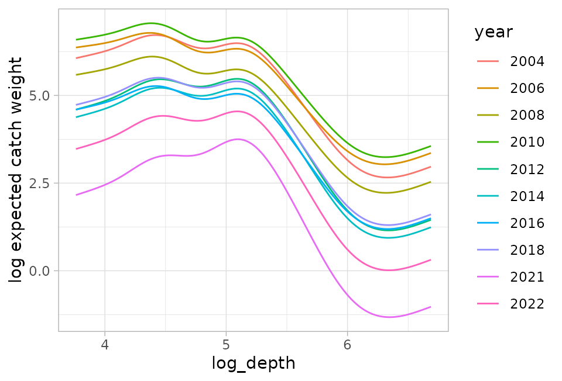
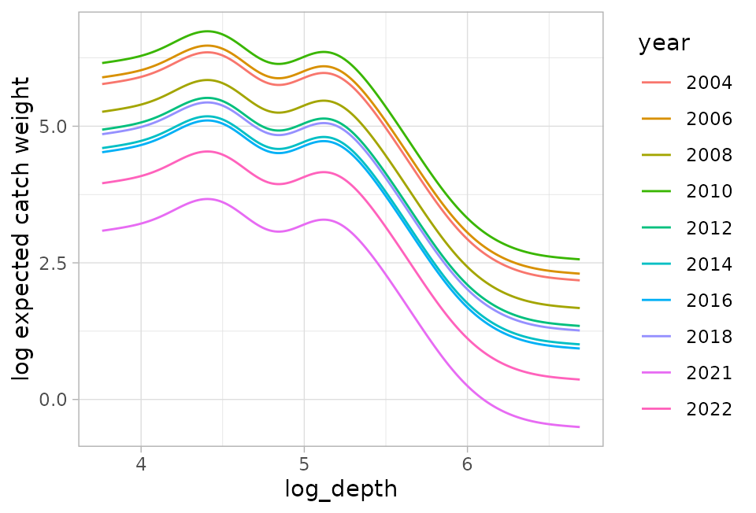
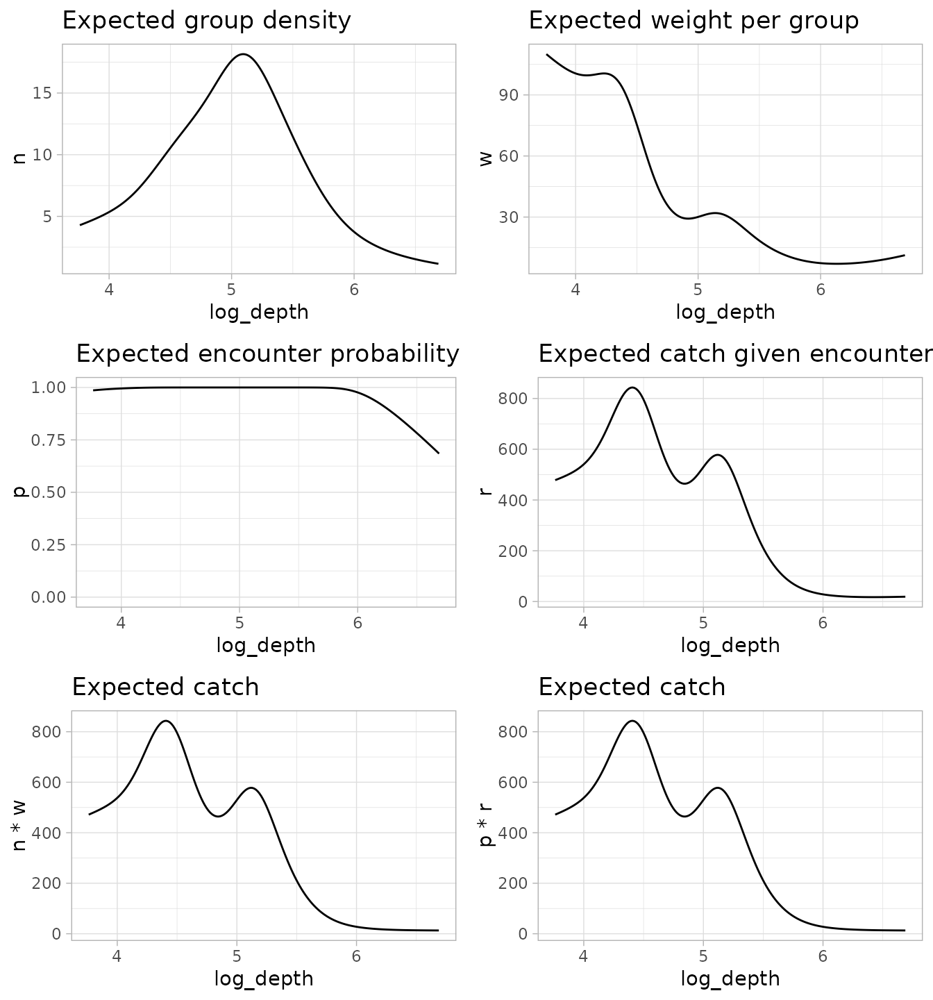

Introduction
Jim Thorson introduced the Poisson-link delta model in a CJFAS paper (Thorson 2018). It’s a useful model family when dealing with positive continuous data that have zeroes. It can be used in the same circumstances that you could use the Tweedie or a traditional delta-gamma or delta-lognormal model with logit and log links.
The Poisson-link delta formulation describes how to go from linear predictors in link space to expected values that are entered into the data likelihood. The likelihood on the first component is Bernoulli (i.e., binomial with single trials) and the likelihood of the second component can be gamma or lognormal.
In sdmTMB, these families are specified as
delta_gamma(type = "poisson-link") and
delta_lognormal(type = "poisson-link").
The model
Thorson (2018) describes the process model as:
where represents encounter probability, represents group numbers density, represents positive catch rate (i.e., catch rate given encounter), and represents weight per group.
The linear predictors represent log group numbers density () and log weight per group ():
where the s represent design matrices, the s represent coefficient vectors, and the represents all other possible model components that are linear in link space including any random fields.
These are transformed with the above process equations to generate and . Then the model evaluates the following likelihood components. For the encounter probability
or equivalently
and for the positive rate , either the gamma or lognormal likelihood
where represents the gamma shape and represents the scale, or
where represents the bias-corrected log mean and represents the standard deviation in log-space.
An example
Data
We will work with Pacific Spiny Dogfish observations from a trawl
survey off the west coast of Vancouver Island, Canada. The dataset
dogfish is contained within the sdmTMB package.
dogfish$log_depth <- log(dogfish$depth)
head(dogfish)
#> # A tibble: 6 × 10
#> year longitude latitude X Y present catch_weight area_swept depth
#> <int> <dbl> <dbl> <dbl> <dbl> <int> <dbl> <dbl> <dbl>
#> 1 2004 -125. 48.7 780. 5399. 1 22.7 0.103 73
#> 2 2004 -126. 48.2 735. 5346. 0 0 0.103 455
#> 3 2004 -126. 48.3 738. 5355. 0 0 0.116 171
#> 4 2004 -126. 48.3 749. 5354. 1 221. 0.122 137
#> 5 2004 -126. 48.4 744. 5362. 1 440. 0.0964 140
#> 6 2004 -126. 48.4 737. 5362. 1 48.2 0.122 145
#> # ℹ 1 more variable: log_depth <dbl>A conventional delta-gamma model:
First, lets fit a conventional delta-gamma model with logit and log links and illustrate a limitation.
fit_dg <- sdmTMB(catch_weight ~ 0 + as.factor(year) + s(log_depth),
family = delta_gamma(),
spatial = "on",
mesh = mesh,
data = dogfish,
anisotropy = FALSE,
reml = TRUE,
offset = log(dogfish$area_swept),
silent = FALSE
)
sanity(fit_dg)
#> ✔ Non-linear minimizer suggests successful convergence
#> ✔ Hessian matrix is positive definite
#> ✔ No extreme or very small eigenvalues detected
#> ✔ No gradients with respect to fixed effects are >= 0.001
#> ✔ No fixed-effect standard errors are NA
#> ✔ No standard errors look unreasonably large
#> ✔ No sigma parameters are < 0.01
#> ✔ No sigma parameters are > 100
#> ✔ Range parameters don't look unreasonably largeHow can we show the effect of depth on catch weight? There is no one curve, because the two components use different links (logit + log), so there is a different catch-weight to depth relationship depending on what the expected catch weight is from other coefficients (here year but also for a given point in space because of the spatial random field).
For example, here is how the curves look for different years:
nd <- expand.grid(
log_depth = seq(min(dogfish$log_depth), max(dogfish$log_depth), length.out = 200),
year = as.factor(unique(dogfish$year))
)
p <- predict(fit_dg, newdata = nd, re_form = NA)
ggplot(p, aes(log_depth, log(plogis(est1) * exp(est2)), colour = year)) +
geom_line() +
ylab("log expected catch weight")
There is no one curve! It depends on the value of year and for every point in space that has a different random field value.
A Poisson-link-delta-gamma alternative
Instead, let’s fit a Poisson-link delta-gamma model:
fit_dpg <- sdmTMB(catch_weight ~ 0 + as.factor(year) + s(log_depth),
family = delta_gamma(type = "poisson-link"),
spatial = "on",
mesh = mesh,
data = dogfish,
anisotropy = TRUE,
reml = TRUE,
offset = log(dogfish$area_swept),
silent = FALSE
)
sanity(fit_dpg)
#> ✔ Non-linear minimizer suggests successful convergence
#> ✔ Hessian matrix is positive definite
#> ✔ No extreme or very small eigenvalues detected
#> ✔ No gradients with respect to fixed effects are >= 0.001
#> ✔ No fixed-effect standard errors are NA
#> ✔ No standard errors look unreasonably large
#> ✔ No sigma parameters are < 0.01
#> ✔ No sigma parameters are > 100
summary(fit_dpg)
#> Spatial model fit by REML ['sdmTMB']
#> Formula: catch_weight ~ 0 + as.factor(year) + s(log_depth)
#> Mesh: mesh (anisotropic covariance)
#> Data: dogfish
#> Family: delta_gamma(link1 = 'log', link2 = 'log', type = 'poisson-link')
#>
#> Delta/hurdle model 1: -----------------------------------
#> Family: binomial(link = 'log')
#> Conditional model:
#> coef.est coef.se
#> as.factor(year)2004 1.96 0.77
#> as.factor(year)2006 2.89 0.77
#> as.factor(year)2008 2.57 0.76
#> as.factor(year)2010 2.43 0.77
#> as.factor(year)2012 1.94 0.76
#> as.factor(year)2014 1.93 0.76
#> as.factor(year)2016 2.20 0.76
#> as.factor(year)2018 2.03 0.76
#> as.factor(year)2021 1.18 0.76
#> as.factor(year)2022 1.75 0.76
#> slog_depth 0.15 0.54
#>
#> Smooth terms:
#> Std. Dev.
#> sd__s(log_depth) 2.38
#>
#> Matérn anisotropic range (spatial): 26.1 to 381.1 at 142 deg.
#> Spatial SD: 1.18
#>
#> Delta/hurdle model 2: -----------------------------------
#> Family: Gamma(link = 'log')
#> Conditional model:
#> coef.est coef.se
#> as.factor(year)2004 3.59 0.37
#> as.factor(year)2006 2.78 0.33
#> as.factor(year)2008 2.47 0.32
#> as.factor(year)2010 3.50 0.34
#> as.factor(year)2012 2.77 0.33
#> as.factor(year)2014 2.45 0.33
#> as.factor(year)2016 2.09 0.32
#> as.factor(year)2018 2.60 0.32
#> as.factor(year)2021 1.69 0.33
#> as.factor(year)2022 1.98 0.33
#> slog_depth -0.20 0.82
#>
#> Smooth terms:
#> Std. Dev.
#> sd__s(log_depth) 5.09
#>
#> Dispersion parameter: 0.59
#> Matérn anisotropic range (spatial): 4.2 to 60.8 at 142 deg.
#> Spatial SD: 1.97
#>
#> REML criterion at convergence: 5851.613
#>
#> See ?tidy.sdmTMB to extract these values as a data frame.
#> See ?plot_anisotropy to plot the anisotropic range.and make the same plot:
p_dpg <- predict(fit_dpg, newdata = nd, re_form = NA)
ggplot(p_dpg, aes(log_depth, est1 + est2, colour = year)) +
geom_line() +
ylab("log expected catch weight")
Note how the lines are now parallel. Other predictors shift the curve up and down but do not affect the shape of the combined prediction because both use a log link.
Examining the model components and how they combine
We’ll make some predictions across depths but for a single year for simplicity:
We can extract the components of our theoretical deconstruction of catch into group numbers density, weight per group, encounter probability, and positive rate:
We can come up with our overall predictions in two ways:
n * w: group numbers weight per group. This is equivalentlyexp(est1 + est2), whereest1andest2are the linear predictors in link space.p * r: encounter probability positive catch rate.
These give identical answers:
Let’s plot out all the components and possible combinations:
g1 <- ggplot(p_pdg, aes(log_depth, n)) +
geom_line() +
ggtitle("Expected group density")
g2 <- ggplot(p_pdg, aes(log_depth, w)) +
geom_line() +
ggtitle("Expected weight per group")
g3 <- ggplot(p_pdg, aes(log_depth, p)) +
geom_line() +
ylim(0, 1) +
ggtitle("Expected encounter probability")
g4 <- ggplot(p_pdg, aes(log_depth, r)) +
geom_line() +
ggtitle("Expected catch given encounter")
g5 <- ggplot(p_pdg, aes(log_depth, n * w)) +
geom_line() +
ggtitle("Expected catch")
g6 <- ggplot(p_pdg, aes(log_depth, p * r)) +
geom_line() +
ggtitle("Expected catch")
cowplot::plot_grid(g1, g2, g3, g4, g5, g6, ncol = 2)
FAQ
What is a ‘group’ and how does the model know about numbers!?
The model represents a process in which groups of fish (or other observations, of course) are encountered in certain numbers (“group numbers density”) and each group is of a certain weight (“weight per group”).
This is a theoretical construct reflecting how the model can best parse the two components according to the properties of the observed data. Since the predicted response value is , you can get to the same value by multiplying and dividing by the same amount. You could have more numbers and less weight per group or fewer numbers and more weight per group and get to the same place. However, there is a balance of the two, given covariates and random effects, that best fits the data when entered into the likelihood as and .
What is the connection to the complementary log-log link (‘cloglog’) and the Poisson?
From Wikipedia: “The cloglog model corresponds to applications where we observe either zero events (e.g., defects) or one or more, where the number of events is assumed to follow the Poisson distribution.” The following is based around this entry.
The Poisson assumes that the probability of observing a zero given expected number is . I.e.,
If is the probability of observing a non-zero (i.e., an encounter), then
We can re-arrange that as
And since we want our linear predictor to take values from negative to positive infinity (and therefore keep our predicted number densities positive after exponentiating them), we work in log space:
The right side is known as the ‘cloglog’ link function.
This link has the following inverse link function:
We can check this in R:
You can see how the cloglog inverse link is the same as the first part of our Poisson-link delta model. However, the ‘trick’ here is that group density affects both encounter probability (as shown above) and positive catch rates :
So, when going from the linear predictors (which have log links) to the expected values going into the data likelihood (binomial + lognormal/gamma), the first linear predictor plays double duty in that it appears in both delta model expected values.
What are the advantages of using such a model?
The poisson-link families have the flexibility of a delta model, which in practice is often helpful for better predictions. This could be checked with AIC, or better yet, cross validation.
Like other delta models, there is a decomposition of the process into two theoretical parts. This can help interpretation (or can make things more complicated to interpret!). Here, these parts can be rearranged to represent two ways of thinking about those two components ( and or and ).
Compared to a traditional delta-gamma model that has a logit and log link, the two linear predictors have log links, so their coefficients are interpretable as multiplicative effects, and their effects can be combined. E.g., their coefficients can be added in log space or their predictions can be added in log space to generate a single response curve for a given predictor.
Where does the offset come in?
The offset is added to the linear predictor for
,
i.e., exp(offset) * n. For example if
represents area swept (a measure of effort) and log area swept is
entered into the model as the ‘offset’, then,
Therefore, the encounter probability goes to 1 as area swept (effort) and underlying group numbers density increase towards infinity. This gets carried over to the positive rate via as .
Why call it a Poisson-link?
I can only guess. The cloglog function is derived from the theory of a Poisson and although the cloglog function appears in the ‘Poisson-link’ model, the interaction of the two model components makes it different from a pure cloglog and so I assume it needed another name.